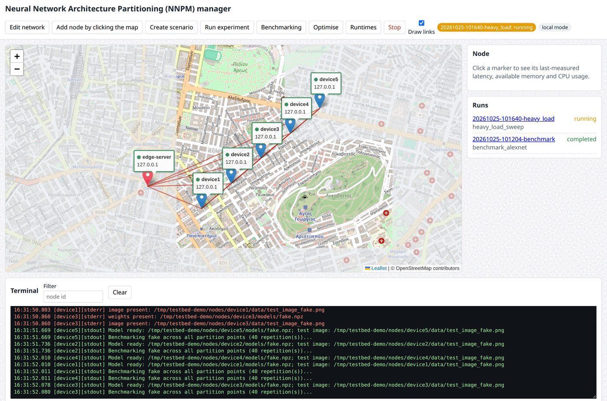

The experiment I could not rerun
In 2024 I showed a demo at ACM MobiHoc: five Raspberry Pi 4 boards, a PC as base station, and a web page that split AlexNet between them and reported the delay. It worked on the day. A year later I wanted to rerun one of those experiments and found how much of it lived in my head rather than in the repository. A script called a module that was not there. An aggregation step read a file that nothing wrote. The stop button ended the processes on the base station and left shaping rules and load generators running on the boards. Getting numbers had never required any of that to be right.
That is the uncomfortable part of research testbeds. They produce plausible plots long before they produce reproducible ones, and the plumbing that decides which is which is the part nobody reviews. So when I wrote the testbed up as Chapter 3 and an appendix of my PhD thesis, I inverted the relationship. The text became the specification. The code was rewritten to match it, and a test now fails if any file, function or output name the thesis cites is missing from the repository. This article is about what that rewrite taught me. The result is the Distributed Inference Testbed.
What is on the rack
The hardware is deliberately ordinary. Five Raspberry Pi 4 Model B boards sit on an open rack, two with 8 GB of memory and three with 4 GB, each with a 32 GB microSD card and no accelerator of any kind. Two to three metres away stands the edge server, an Intel i7-9700K desktop with 32 GB of memory. A USB 802.11ac adapter on that machine hosts an isolated 5 GHz access point. Nothing else is on that network, and it hands out no default route, so the delays we measure belong to our own traffic. The boards and their accessories cost roughly 450 to 500 euros.
Each board also has an Ethernet cable to a small switch. That wired network carries SSH, result collection, NTP and package installation. The wireless network carries inference traffic and nothing else. Keeping management traffic off the data plane sounds obvious, but the first version did not do it, and every log transfer competed with the measurement it was logging.
The edge server runs chrony as the NTP server for both networks. Each board polls it every few seconds, and a run refuses to start if any device's clock offset exceeds one millisecond. Optional INA260 sensors sit in the 5 V supply line of each board and report current, voltage and power over I2C.
What one experiment does
An experiment is one YAML file. It names the model, the devices, the repetitions and the seed, the scheduling policy of the edge server, and per device the network conditions, the compute load and any hardware constraints. The pipeline runs it in seven stages.
Preflight creates the run directory and writes the metadata before anything changes: the scenario, the Git commit, framework and kernel versions, and the NTP status of every node. Apply pins the edge server to its base frequency with turbo off, then on each device applies the frequency cap, the memory cgroup, the thread count, the tc-netem shaping, any background traffic, the load generator and the monitors, and waits a settling time. Profile picks a start instant a few seconds ahead and passes it to every device. Each device sleeps until its clock reaches that instant, captures its wall time and its monotonic counter together, and profiles the model layer by layer. Optionally it then runs partitioned inference against the service on the edge server and records the local, transmission, queueing and remote phases. Collect pings, captures a system snapshot, and copies every result file to the server with the hostname prefixed. Aggregate averages over repetitions, merges the monitor traces onto the common origin, and writes the three files the analytical models consume. Optimise searches for the partition vector. Teardown undoes everything.
The teardown is the stage I care about most, because it is the one the first version did not have. Nothing of the testbed stays resident on a board. Every device-side process is started over SSH for the run, placed in its own process group, tagged with the run id, and killed by group at the end. The only things a board needs permanently are an operating system, an SSH server and the inference runtime. A resident agent would have been an uncontrolled background load on the very devices whose background load we are trying to control. The price of that choice is that process lifetime must be managed explicitly, which is what the journal is for.
Controlled conditions and what gets measured
The thesis defines three compute regimes, and the load generator implements them by name: light is 10 to 20 percent CPU and 10 to 20 percent memory, moderate is 30 to 50 and 30 to 40, heavy is 60 to 80 and 50 to 60. A continuous mode redraws a target every ten seconds from a seeded generator. A processes mode runs a given number of fully busy processes, which is the background-process model of the delay analysis. The CPU load is a duty cycle on one core, busy for a fraction of each 100 ms period, so a 40 percent target really is 40 percent.
Network conditions are applied with tc-netem on the wireless interface: added delay with constant, uniform or square-wave variation, jitter, packet loss, a token-bucket rate cap, and optionally a different profile per destination. An iperf3 stream can add background traffic for the whole run. Heterogeneity is emulated with cpufreq caps, cgroups memory limits and thread counts, each recorded before it is applied and restored at teardown.
What comes back is finer than the first version collected. Per layer: latency, peak CPU, peak memory, operation count and output size. Per partition point: the cumulative versions of those, and the bytes a cut would transmit. Per inference phase: local time, transmission time from first byte to the server's acknowledgement of the last, queue wait, and remote time. A monitor samples CPU, memory, temperature, per-core frequency and the firmware throttling flags once a second, so a run can prove it never throttled. Power traces integrate to energy and the energy-delay product.
All timings are integers in nanoseconds from a monotonic counter, and every record carries the origin pair captured at the start signal. Traces from five boards line up by arithmetic, and the preflight check catches a drifting clock before the run instead of after it.
NNPM, and running without hardware
The web application is called the Neural Network Architecture Partitioning manager, NNPM. It shows the nodes on a map, probes each one with three pings every two seconds, and turns a marker green only when all three answer. The map is not decoration: the distance between two markers becomes a synthetic link latency, five milliseconds plus one per kilometre, which tc-netem then injects. Dialogs create versioned scenarios, run the benchmarking pipeline, and run the optimiser on a finished run under either scheduling policy. A terminal shows the merged output of every device as it happens. A summary page per run links the output files and the journal.

The part of the rewrite I would defend hardest is local mode. Every node becomes a directory on one machine. Device commands run as local subprocesses. The privileged tools run in dry-run mode or against a fake /sys tree. The inference service listens on loopback and a fake model stands in for a real network. The whole pipeline, the web application and the provisioning scripts run this way in continuous integration on every push, next to 330 fast tests and strict type checking. The first version could only be exercised on the Pis, which is how a missing file survived in the published pipeline for a year. What local mode cannot answer is written down as a hardware checklist, each item with the command to run and the value to expect.
The same discipline applies to dependencies. Every role has a hash-locked requirements file. Provisioning installs boards from a local mirror with a SHA-256 manifest, and a board can only install with no index. One script talks to the internet; everything else talks to the mirror.
What it was used for, and what is still open
Chapter 4 of the thesis used four boards to validate the DNN partitioning model under both scheduling policies of the edge server, over 50 runs each. The measurements landed within a few percent of the analytical predictions, which is the result a testbed exists to produce: not a better number, but a check on the model that produced the number.
Chapter 5 used the boards as profiles for a decoder layer, measuring a single attention head at 2.4 to 6.5 ms per token against a feed-forward block at 0.23 to 0.62 s, over a link measured at 19.6 Mbps. Those profiles are what the LLM partitioning algorithm plans against. Chapter 6 ran HeadSplit, my head-level LLM runtime, with one 8 GB controller and four 4 GB workers, and used the shaping and heterogeneity tools to sweep added round-trip time from 0 to 50 ms and to slow selected workers to 1.2 or 0.6 GHz. HeadSplit is now a runtime plug-in of the testbed, installed from the mirror at a pinned commit, prepared and run from the same dialogs as everything else.
What is open is clear. The rewrite reproduces the scheduling formulas on loopback and the whole pipeline in local mode on every push. The hardware validation checklist, with the NTP offset, the wireless throughput, the provisioning time and the Chapter 4 table, is the next thing to run on the new code, and some figures in the setup documentation will be replaced by whatever the scripts log. That is the point of writing the specification first. The next time an experiment does not reproduce, the test suite will tell me which sentence is wrong.
The repository, the documentation site and the citation file are at github.com/Dimitrios-Kafetzis/Distributed-Inference-Testbed. The earlier version, as demonstrated at MobiHoc 2024, remains available as reference material.